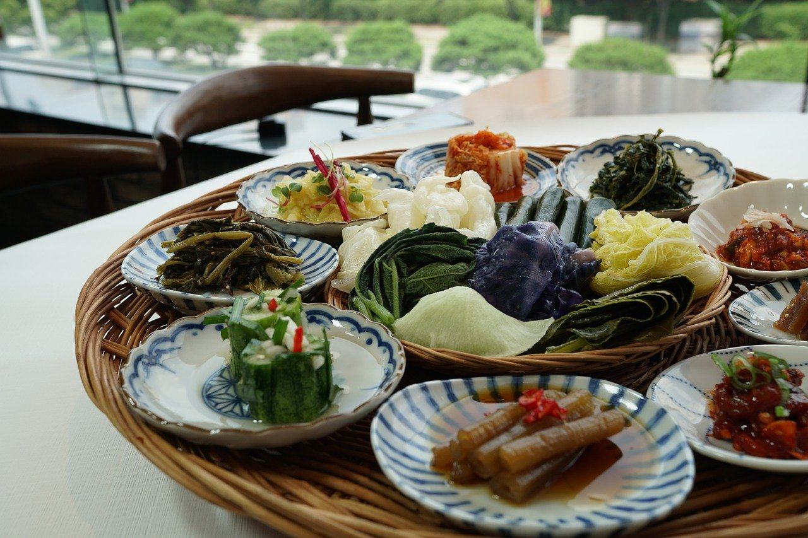
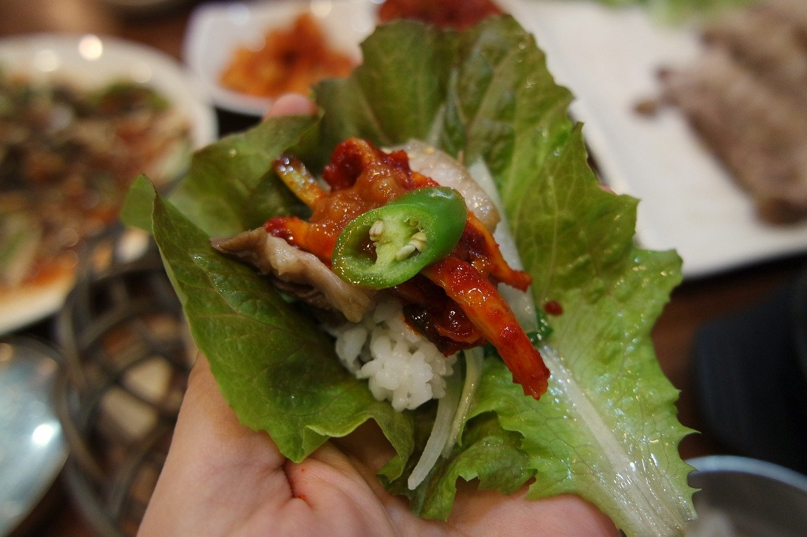

A Novice's Notes on Korean Food
Posted 2 days ago
All things Korean are getting more popular by the hour. The spread of hallyu, also known as the Korean Wave, is becoming more apparent in the Western world. With the popularization of K-Dramas, K-beauty and K-pop, Korean food has also taken a step into the limelight. Generally, Korean food means Bulgogi, Bibimbap, Korean BBQ and packaged Extra Spicy ramyun to Westerners. However, once I took a deeper dive into Korean cuisine, I realized how tasty, complex and truly amazing Korean cuisine is.
It's All About Thinking Ahead
What I like about Korean dishes is that it's all about thinking ahead. Korean cuisine incorporates a lot of fermented foods. One of the most well-known staples is Kimchi. The tubs of Kimchi in Korean grocery stores are usually made of Napa cabbage. However, there are many kinds of Kimchi! They can be made of radishes, green onions, cucumbers and many more. As I was told, traditionally, families would make their own supply of Kimchi during the start of winter. Korean Banchan (side dishes) is a bunch of smaller dishes served collectively on the side. They are perfect for meal prep because they can be easily stored in the fridge and taken out for a quick meal. I usually make Kongnamul Muchim (Seasoned Soybean Sprouts) and Spicy Cucumber Salad (Oi Muchim). Both are easy to make and they go well with almost anything. Gochujang & Gochugaru (Red Pepper Paste & Red Pepper Powder) are absolute must-have ingredients when making Korean dishes. Almost every recipe that I follow calls for these two ingredients! Gochujang is a fermented condiment that can be used in many ways. It also has a very long shelf life and can be stored in the fridge for many months. Once I started making my own Korean dishes at home, I really admired how the foundation of Korean cuisine is rooted in preparing ahead.
All Good Things Come Wrapped
Whenever you go to a KBBQ restaurant, you'll notice they will serve you a plate of lettuce. You are supposed to wrap the rice and meat and whatever else inside the leafy vegetable, roll it and eat it. Ssam is a dish in Korean cuisine in which leafy vegetables are used to wrap meat and other fillings before eaten. It usually comes with a condiment Ssamjang which is a type of soybean paste. Ssam makes for a fun dining experience, but I think it is also a brilliant way to incorporate leafy vegetables in any meal. Sometimes, salads can get a little boring. There are other types of vegetables used for Ssam, such as perilla leaves or cabbage. They can be eaten raw or blanched. A personal favorite of mine is dried seaweed. There are many types of pre-cut dried seaweed that are available in most Asian grocery stores. Whenever I feel like I need to add extra flavor to meals, I open up a dried seaweed packet and wrap rice with it. It adds a nice salty flavor and crunch. It definitely gives my meal that extra boost of flavor.
Leave A Comment